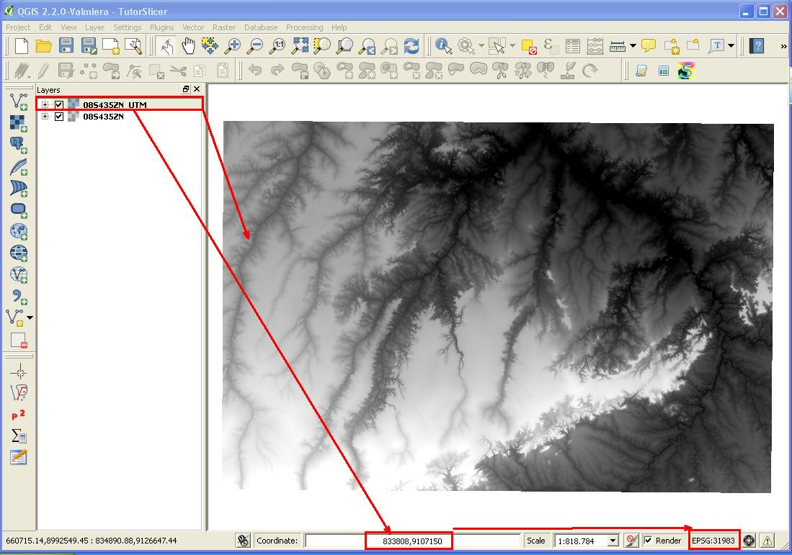
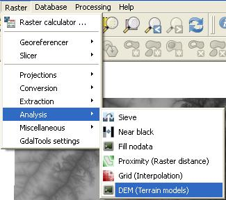
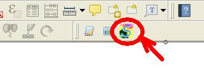
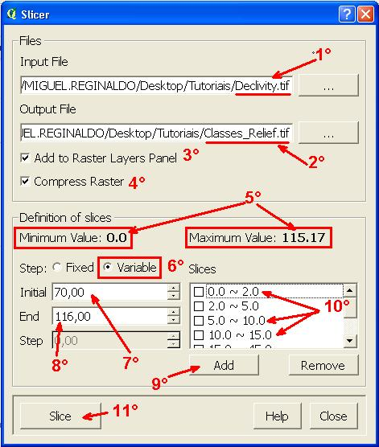
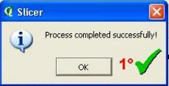
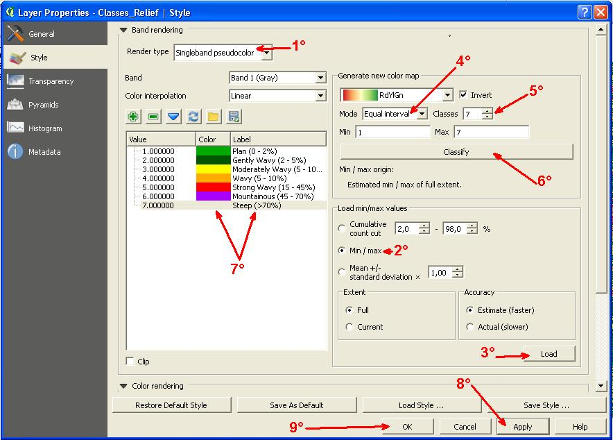

|
|
SLICER |
|
|||||||||||||||||||||||||||
|
|
|||||||||||||||||||||||||||||
|
3 – Example of creating a Relief Classes Map, using steps variables |
|||||||||||||||||||||||||||||
|
Taking advantage of the altitude 08S435ZN.tif the example of MDE 01, obtained through the e-mail electronic http://www.webmapit.com.br/inpe/topodata, from this we create a slope grid with pixel values in percent.
Before we continue we must change the projection of our SRTM image that is in lat / lon, to the UTM coordinate system.
Enter the input file "08S435ZN.tif" and the output file that we will call "08S435ZN_UTM.tif". "Source SRC", we will inform the coordinate system of the input file, in case WSG84 (EPSG: 4326). In "Target SRC" tell the output file coordinate system in this case will be the SIRGAS 2000 / UTM 23S. Enter -99 for "No data values" and hold "Load into canvas When finished". Finally, click the "OK" button to perform the conversion and, hopefully, our raster will be added to QGIS layers panel, already in UTM.
 Now we can turn our altitude grid (SRTM) in a slope grid percentage.
 With the DEM window (Terrain models) enter the name of the output file, "08S435N_UTM.tif", then the output file "Declivity.tif". In "Mode" check box select the "Slope" option. Keep the "Slope expresso the percent (instead of the degrees) Keep the "Load into canvas When finished" marked. Finally, click the "OK" button to begin processing. At the end, we will raster slope added to the layers panel.
We can now use the Plugin SLICER clicking directly on the add-ons toolbar button.
 In order to make the image slicing will follow the steps as suggested in Figure below:
 1° - Find the name of the input raster file we want to slice in the case, "Declivity.tif"; 2° - Enter the name of the output raster file in the case, "Classes_Relief.tif"; 3° - Keep the "Add To Raster Layers Panel" marked to add the output raster to QGIS layers panel; 4° - Keep the "Compress Raster" marked to compress the output file, avoiding waste of hard disk space; 5° - Check the minimum and maximum values of the pixels of the image, related to altitude; 6° - In this example the type of step (STEP) is the "Variable" option, to obtain slices with different intervals. In the case we will use the slicing proposed by LEPSCH et al, 1991, adapted to the slope classes:
7 - To enter the first class Slope (slice), in the "Initial" key in the lower value of the Slope class, in this case, 0%; 8 - In the "End" enter a final value of Slope Class range, ie 2%; 9 - Click the "Add" button to add the first class Slope (slice); Repeat steps 7-8 to insert the other slope classes in slices list; 10 - You can check the slices that have been added in the list box, and can remove any share by checking the left check box of each slice and following click the "Remove" button; 11 - Finally, click the "Slice" button to start the slicing process.
You will see a dialog box stating that the process was successful, click the "OK" and then in the Slice window click the "Close" button to close it.
 Note that our major class map was added to layers panel.
Now, let's coloring our map. Enter the Layer Properties window and the style guide make the setting described in the figure below:
 1° - In the selection "Render type" box, select the "Sigleband PseudoColor" option; 2° - Select the "Min / Max" option; 3° - Click the "Load" button; 4° - In the "Mode" check box, select Equal interval "; 5° - In "Classes" enter the value 7, referring to the number of classes (slices); 6° - Click the "Classify" button; 7° - In the list box with the slices, change the values of the labels and colors, as shown; 8° - Click the "Apply" button; 9° - Finally, click the "OK" button.
See how was our map:
|
|||||||||||||||||||||||||||||
|
|
|
||||||||||||||||||||||||||||